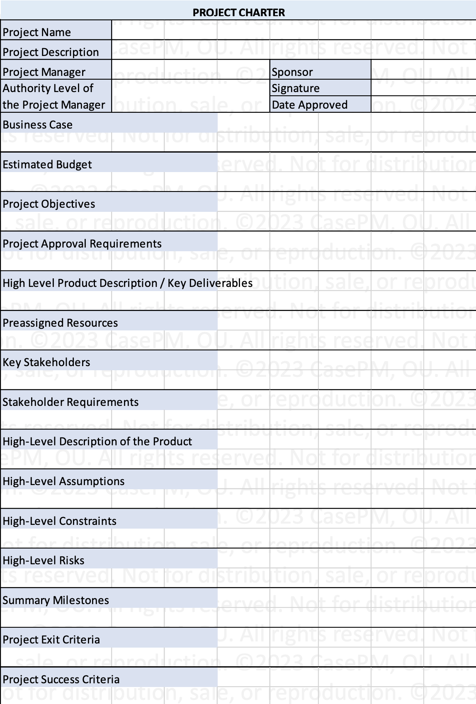

Process goups and Knowledge areas:

Project charter is a formal document that authorizes the project manager an the project team to start the project and execute the project tasks.
| Inputs | Tools | Outputs |
|---|---|---|
Business documents
|
Expert judgement | Project charter |
| Agreements |
Data gathering methods
|
Assumption logs |
Organisational process assets
|
Meetings | |
Enterprise environmental factors
|
Interpersonal and team Skills
|
Business case: Business case is a business document created before the project is chartered. It is reviewed and sometimes updated during the project life cycle. The project sponsor is responsible for creating this document. It contains information like:
Benefits management plan: Describes the main benefits that the project will produce once it is completed and how to measure the benefits. The project benefit could be the product, service, or result. Usually a result of Cost benefit analysis of a project.
In this process, stakeholders are identified, analysed and grouped
| Inputs | Tools | Outputs |
|---|---|---|
| Project charter | Expert judgement | Stakeholder register |
| Business documents | Data gathering | Change requests |
| Project management plan | Data analysis | Project management plan updates |
| Project documents | Data representation | Project documents updates |
| Agreements | Meetings | |
| Organisational process assets | ||
| Enterprise environmental factors |
Stakeholder Mapping/Representation Methods to categorize stakeholders: